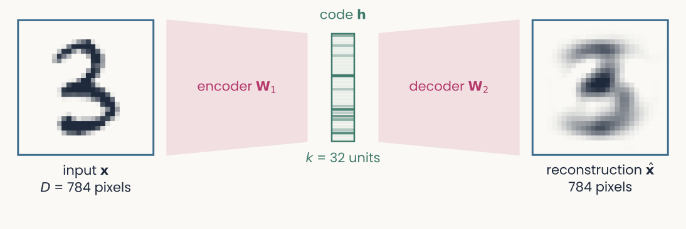
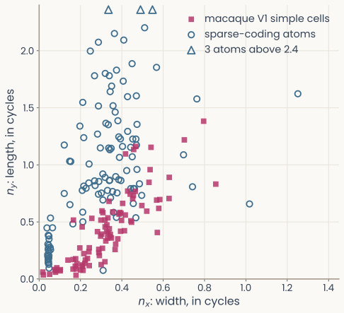
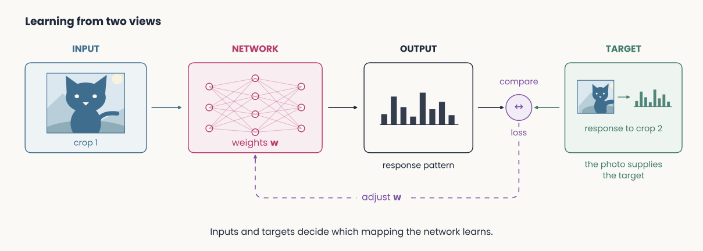
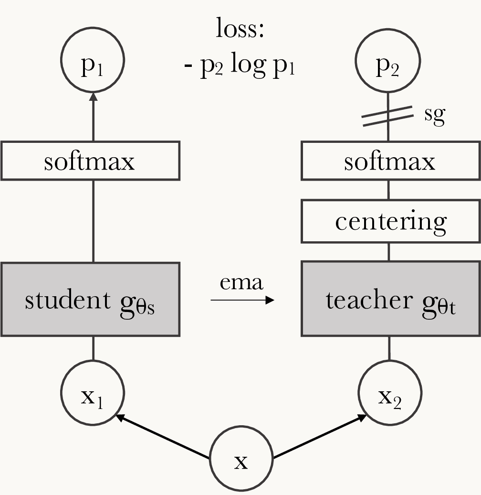
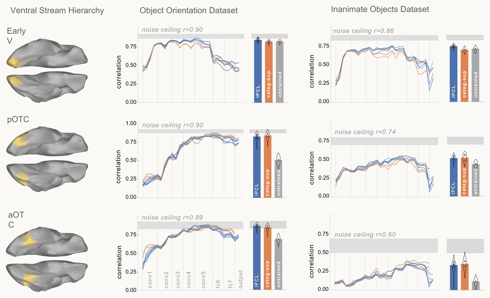

Learning without labels
Reader-friendly version of the 34 lecture slides: the lecture content in normal flow, with figure descriptions and data tables where the figure carries data. Open the presentation.
Slide 2
Learning without labels
Three ways a network learns with no labels: rebuild the input, manufacture the labels from the input, and the question of whether the brain needs labels at all
Slide 3
Where the last lecture left us
![Four scatter plots of alignment score against ImageNet multilabel accuracy for 363 classifiers, CNNs as blue dots, transformers orange, self-supervised and image-text models as open circles, adversarially trained models as triangles, each with a dashed noise ceiling. Arcaro IT: rank correlation plus 0.37 overall, minus 0.38 among the 84 models above 92.7 percent. Triple-N IT: minus 0.08 overall, plus 0.20 at the top. TVSD IT: plus 0.73 overall, plus 0.65 at the top. Human feature use: minus 0.77 overall, minus 0.37 at the top](../images/L13/serre2026_annrev_fig4_ad.png)
Four scatter plots of alignment score against ImageNet multilabel accuracy for 363 classifiers, CNNs as blue dots, transformers orange, self-supervised and image-text models as open circles, adversarially trained models as triangles, each with a dashed noise ceiling. Arcaro IT: rank correlation plus 0.37 overall, minus 0.38 among the 84 models above 92.7 percent. Triple-N IT: minus 0.08 overall, plus 0.20 at the top. TVSD IT: plus 0.73 overall, plus 0.65 at the top. Human feature use: minus 0.77 overall, minus 0.37 at the top
Open full-size figureReproduced from Serre (2026), Fig. 4 (draft)
- 363 networks scored against IT recordings and against human feature use. The open circles are networks trained without labels (self-supervised) or from image–caption pairs
- They sit among the best fits. Labels are not what made a network predict the brain
- The brain gets no labels either. Today's question: how does a network learn anything from its inputs alone?
Slide 4
Learning without a teacher
- Most networks so far learned from labels: each input came with the right answer , and the weights followed the error
- Unsupervised learning: no labels. The network sees only its inputs
- A ferret kit or an infant sees millions of scenes and is told the name of almost none; whatever V1 learns, it learns this way
- Today the input is its own teacher: what can a network learn from its inputs alone?
Slide 5
What does a network learn from its inputs alone?
PCA keeps the directions that rebuild the data best. Write that goal as a loss, rebuild the input through a narrow layer, and let gradient descent find the weights
Slide 6
The autoencoder

An hourglass autoencoder trained on handwritten digits. Left: an input digit 3, 784 pixels. A magenta trapezoid labeled encoder W1 narrows to a column of 32 code units h, shaded by how active each is. A second trapezoid labeled decoder W2 widens to the reconstruction, a blurrier but recognizable 3
Open full-size figure
- The encoder maps ( numbers) to a code ( numbers); the decoder rebuilds . With (undercomplete), the bottleneck keeps only what rebuilds the input
- Uses: compress; flag inputs that rebuild badly (anomaly detection); a model of memory, store the code and rebuild the episode on recall (Spens & Burgess 2024)
Computed: a 784–32–784 network trained on 60,000 MNIST digits; a test digit
Slide 7
The reconstruction loss
The target is the input: no labels needed. Like the two-views objective of the lecture on learning the weights, this is self-supervised: the input supplies its own target, a special case of unsupervised learning.
- Train with backprop: the error goes back through the decoder, then the encoder
- PCA's directions also minimize the squared reconstruction error of a -dimensional projection, the other side of maximizing variance (PCA lecture)
Slide 8
Tied weights ⇒ PCA's subspace
Tie the decoder to the encoder: (centered data, no biases, the identity).
A linear autoencoder then reconstructs
- gives the scores; adds the rows back, each weighted by its score: PCA's reconstruction formula with the rows of as the directions
- Minimizing is the PCA objective: the rows end up spanning PC1 to PC, in any rotation (rotating a code keeps every distance; the units differ)
Slide 9
Nonlinear autoencoders go beyond PCA

Two panels of 300 points on a noisy half circle in two dimensions, each point joined by a faint line to its reconstruction. Left, linear autoencoder with a one-unit code: the reconstructions lie on a straight horizontal line, mean squared error 0.107. Right, nonlinear autoencoder with a one-unit code: the reconstructions follow the arc, mean squared error 0.002
Open full-size figure- Same loss, same one-number code. The linear code keeps a flat line (PC1); the nonlinear code bends to follow the curved manifold
Computed: toy data, 300 points on a noisy half circle
Slide 10
Sparse coding: an autoencoder with a prior

One 16 by 16 whitened image patch, shown to be approximately equal to the sum of three learned atoms, each an oriented stripe pattern multiplied by its coefficient, plus a few more atoms. Below, a stem plot of the patch's 256 code coefficients, almost all exactly zero
Open full-size figureComputed: 16 × 16 patches of whitened natural photographs
- Sparse coding (Olshausen & Field 1996): rebuild each patch as a weighted sum of a few of 256 small images, the atoms; learn the atoms, no labels
- : the reconstruction loss plus a penalty that keeps the code sparse: a decoder , no encoder, and a prior (few atoms active) in place of the bottleneck
Slide 11
Measured against V1

Scatter of Gabor width nx against length ny, in cycles. Magenta squares: 93 macaque V1 simple cells, mostly below 0.6 on both axes. Open blue circles: the Gabor-fitted atoms of our sparse code, spread to larger values of ny, many above 0.8
Open full-size figure
- Fit a Gabor to each atom; compare with 93 macaque V1 simple cells (Ringach 2002). : the window's width across the stripes, : its length along them, in stripe cycles
- Medians, atoms vs cells. Width matches: 0.33 vs 0.32. Length does not: 0.87 vs 0.41
- A sparse code gets V1's width right and its length wrong: a prior and natural images give a first V1, and a testable one
Slide 12
Where do the labels come from?
A child is never handed a million labeled pictures. Can a network manufacture its own labels from the input?
Slide 13
The label problem
- ImageNet: about 14 million images labeled by hand. A child is never handed millions of
(image, category)pairs, yet learns far more - Supervision is the exception in nature. Most of what a brain learns comes from the structure of its own sensory stream
- Two escapes:
- Unsupervised learning, the first half of today: the autoencoder and sparse coding find structure with no targets (PCA did too)
- Self-supervised learning: manufacture a supervised problem from the data itself
Slide 14
Make the data label itself
- Self-supervised learning (SSL): hide or transform part of the input; train the network to predict it from the rest
- Same move as the autoencoder: the target comes from the input
- Pretext task: the made-up problem we train on (rotation, a hidden patch, the other view of an image); its answer is thrown away
- Downstream task: the task we care about. Freeze the encoder, fit a readout on its features
- The bet: a good pretext task forces the network to learn the structure the downstream task needs
Slide 15
Early pretext tasks
- Predict an image's rotation (0, 90, 180 or 270°)
- Solve a jigsaw of shuffled patches; predict the relative position of two patches
- Colorize a grayscale image
- Each is a heuristic: decent features, not great. Two families won: contrastive learning and masked prediction
Slide 16
Contrastive learning: the idea

Learning from two views: the input is one crop of a kitten photograph, the output is a response pattern, and the target is the network's response to a second crop of the same photograph
Open full-size figure
- Goal: a representation where two views of the same image are close and views of different images are far
- Make a positive pair by changing one image two ways (crop, color jitter, blur): both are "the same dog". All other images in the batch are negatives
- No labels: the identity of the source image is the supervisory signal
Slide 17
SimCLR
- For each image : sample two augmented views
- Encoder (a ResNet) gives the representation : what we keep for downstream tasks
- A small projection head gives the embedding : where the loss lives
- Pull together; push apart every other in the batch
- A linear readout on the frozen features of a ResNet-50 reaches 69.3% top-1 on ImageNet, with no label used to train the encoder; a ResNet-50 four times wider reaches 76.5%
Slide 18
The InfoNCE loss
Cosine similarity and temperature . For a positive pair :
- Softmax cross-entropy where the "correct class" is the matching view: a batch of images gives views, and each view does a -way classification
- Familiar machinery, new label source. The temperature sets how hard the closest negatives push
Slide 19
Without negatives: self-distillation (BYOL, DINO)
- BYOL needs no negatives: an online network predicts a slowly averaged target network, with a stop-gradient on the target
- DINO applies this to vision transformers (student and teacher in the figure); you met its ResNet-50 in the explainability lecture and the assignment
- The danger is collapse: every image mapped to the same vector

The DINO setup: two crops of an image feed a student and a momentum-averaged teacher, with centering and a stop-gradient on the teacher side
Open full-size figure
Slide 20
What DINO learns with no labels

Self-attention maps of a vision transformer trained with DINO and no labels, from Caron et al. (2021), Figure 1: for each of several photographs, the attention of the output token highlights the main object, separating it from the background
Open full-size figure- The attention of the final token (where the network looks when it summarizes the image) outlines the object, though no label, mask or box was ever given
- The same network's units responded to textures and parts in the feature visualizations of the model–brain lecture
Slide 21
Masked prediction: the other family
- Hide part of the input and reconstruct it: no augmentations, no negatives, no giant batches
- Vision: the masked autoencoder (MAE) hides 75% of the image patches and reconstructs their pixels
- The autoencoder of the first half with a twist: reconstruct what was removed, not what was shown
- Language: BERT blanks about 15% of the words and predicts them from both sides; predicting the next word is the same idea with the blank always at the end (a later lecture)
Slide 22
One recipe: pretrain once, read out cheaply

Horizontal bar chart of ImageNet top-1 accuracy for a linear readout on frozen ResNet-50 features. Supervised training with labels, 79.3 percent, in dark grey with a dashed guide line; self-supervised methods in blue: SwAV and DINO 75.3, DeepCluster v2 75.2, BYOL 74.4, OBoW 73.8, Barlow Twins 73.2, InfoMin 73.0, MoCo v2 71.1, SimCLR 69.1
Open full-size figure- Same ResNet-50, same ImageNet photographs, no labels during training. A linear readout on the frozen features then names the thousand classes
- The best self-supervised recipes come within four points of a supervised ResNet-50 trained with the strongest recipe; the first one, SimCLR, within ten
- Pretrain once without labels, read out cheaply: the recipe behind DINO, CLIP, MAE and the language models
Replotted from Caron et al. (2021), Table 2
Slide 23
Does the brain need labels?
Networks trained without labels predict the visual cortex as well as networks trained with them. What, then, is the brain's version of the objective?
Slide 24
Unsupervised networks predict V1, V4 and IT

Figure 2B of Zhuang et al. (2021): three bar plots of noise-corrected neural predictivity for V1, V4 and IT. Eleven unsupervised objectives, from autoencoder and PredNet through colorization and relative position to the contrastive methods, instance recognition, SimCLR and local aggregation, with an untrained network in white and the category-supervised network in black as controls. In IT the local aggregation bar reaches the supervised bar while the autoencoder stays near the untrained level
Open full-size figure- Same architecture, trained on ImageNet with no labels under eleven objectives, then read out to macaque V1, V4 and IT (the Brain-Score procedure); untrained in white, trained with labels in black
- The autoencoder is no better than an untrained network in V4. The contrastive objectives (the red bars) match the label-trained network in V1, V4 and IT. Trained on head-camera video from children instead of ImageNet, the contrastive network still predicts IT well
Slide 25
Category structure without category labels

Figure 2 of Konkle and Alvarez (2022): for three sectors of the human ventral stream, early visual cortex, posterior and anterior occipitotemporal cortex, the correlation between each network layer's RDM and the brain's RDM, for two image sets. The self-supervised network in blue tracks the category-supervised network in orange at every sector, both well above the untrained network in grey and near the noise ceiling
Open full-size figure
- A network trained only to tell every image apart from every other (instance-level contrastive learning), no categories at all
- Compared with human fMRI responses by RSA, sector by sector, it fits as well as the same network trained with category labels, in early visual cortex and along occipitotemporal cortex
- It names ImageNet classes far worse than the supervised network (37% against 59% with a nearest-neighbor readout), yet fits the brain as well: brain-like structure does not need labels, or accuracy
Slide 26
What is the brain's positive pair?

Figure 3 of Li and DiCarlo (2008). A: mean change in object selectivity of 101 IT neurons at the non-swap position, the central position and the swap position; only the swap position shows a loss of selectivity. B: the change for the swapped objects against control objects. C: the change in selectivity against the number of swap exposures, 400 exposures being about one hour, for single neurons and multi-unit sites, with a fitted line falling by about 5.6 spikes per second per 400 exposures
Open full-size figure- In SimCLR the two views are two crops. The brain's two views are two moments in time: the same object before and after an eye movement
- Li and DiCarlo swapped the object during the monkey's saccade to one position, so two objects became "the same thing" there
- No task, no reward. IT neurons' preference between the two objects at that position fell by about 5 spikes/s per hour of exposure and began to reverse at two hours; the control position did not change. A rule that ties successive views together would do it (Hebbian learning, a later lecture)
Slide 27
Back to the cohort
Four scatter plots of alignment score against ImageNet multilabel accuracy for 363 classifiers, CNNs as blue dots, transformers orange, self-supervised and image-text models as open circles, adversarially trained models as triangles, each with a dashed noise ceiling. Arcaro IT: rank correlation plus 0.37 overall, minus 0.38 among the 84 models above 92.7 percent. Triple-N IT: minus 0.08 overall, plus 0.20 at the top. TVSD IT: plus 0.73 overall, plus 0.65 at the top. Human feature use: minus 0.77 overall, minus 0.37 at the top
Open full-size figureReproduced from Serre (2026), Fig. 4 (draft)
- The open circles again: the networks trained without labels sit among the best fits to IT and to human feature use
- Three results agree: labels are not needed to predict the ventral stream (Zhuang, Konkle and Alvarez), temporal contiguity can shape IT in hours (Li and DiCarlo), and the brain gets no labels. Learning without labels is the default case, in brains and in the best models
- What does matter is open: the images (Conwell et al. 2024), the objective, the architecture. A project question
Slide 28
Generative models, in one slide
- A third route to learning without labels: learn to produce the data. The decoder of an autoencoder already turns a code into an image; make the code a distribution you can sample from and you have a generator
- Variational autoencoder: an autoencoder whose code is a Gaussian; decode a random code to get a new image (Kingma & Welling 2014)
- Generative adversarial network: a generator trained to fool a second network that tells real from generated (Goodfellow et al. 2014)
- Diffusion model: add noise to images step by step; train a network to remove it; generate by denoising pure noise (Ho et al. 2020). Behind today's image and video generators
- They return in the last lecture, as world models that simulate an environment
Slide 29
Recap
- Autoencoder: rebuild the input through a narrow code; linear with tied weights, it finds PCA's subspace. Sparse coding adds a prior and, on natural images, learns V1-like atoms, right in width and wrong in length
- Self-supervised learning: manufacture the labels from the input. Contrastive: two views of one image agree, other images differ (InfoNCE); masked prediction: hide most of the input, rebuild it. Pretrain once, read out cheaply: within a few points of supervised training with no labels
- Brains: networks trained without labels predict V1, V4, IT and the human ventral stream as well as supervised ones; an hour of swapped views rewires IT's position tolerance. Labels are not what makes a network brain-like
- Three ways to get a representation close Theme 2: PCA, supervised backprop, and learning without labels
Slide 30
Looking ahead
- Next lecture, Tuesday: recurrent networks. Theme 3 opens with networks that keep a state over time, and a network that decides the way a monkey does
- Mon 11/9: the third assignment is due. Tue 11/10: the fourth is released
- Thu 11/19: project teams on Canvas. Tue 11/24: project proposal, one page per team. Today's question, does a network trained without labels predict your brain data as well as a supervised one, is a project
- Tue 12/1: Exam 2, on the second half of the course, including today
Slide 31
Further reading for the research trail
Optional: a few research-trail entries over the semester. Any paper mentioned in any lecture qualifies, but papers from these lectures are preferred.
- Olshausen & Field Nature 1996: sparse coding of natural images gives V1-like receptive fields
- Chen et al. ICML 2020: SimCLR, the contrastive recipe and what each augmentation contributes
- Caron et al. ICCV 2021: DINO, objects appear in the attention of a network trained without labels
- He et al. CVPR 2022: masked autoencoders, hide 75% of the image and rebuild it
- Zhuang et al. PNAS 2021: unsupervised networks predict V1, V4 and IT as well as supervised ones
- Konkle & Alvarez Nat Commun 2022: category structure in the ventral stream without category labels
- Orhan, Gupta & Lake NeurIPS 2020: self-supervised learning on head-camera video from children
- Li & DiCarlo Science 2008: an hour of swapped views changes IT neurons' position tolerance
Slide 32
Minute paper
Submit on Canvas → Minute papers → Minute Paper 15 (access code read out in class).
Write three brief points in your own words:
- A network trained with SimCLR never saw a label, yet a linear readout on its features names the ImageNet classes nearly as well as a supervised network. Where did the category information come from? Name the signal, and one choice made in training that decides what the representation ignores.
- Something you do not yet understand, or a question still open
- Another idea you found interesting, and why it matters for brains, behavior or AI
Credit for a thoughtful attempt, not for being correct.
Slide 33
Going further
Contrastive learning in code
Slide 34
PyTorch: the InfoNCE loss
import torch
import torch.nn.functional as F
def info_nce_loss(z, tau=0.5):
# z: (2B, d), two augmented views stacked; rows 0..B-1 pair with B..2B-1
z = F.normalize(z, dim=1) # cosine similarity = dot of unit vectors
sim = z @ z.T / tau # (2B, 2B) similarity matrix
n = z.shape[0]
sim.fill_diagonal_(float("-inf")) # a view is never its own positive
targets = (torch.arange(n) + n // 2) % n # the positive of row i is its partner view
return F.cross_entropy(sim, targets) # softmax cross-entropy: which row is my match?
- Cross-entropy over the batch: the positive view is the "correct class"
- The supervised toolkit, cross-entropy and backprop, unchanged; only the label source changed